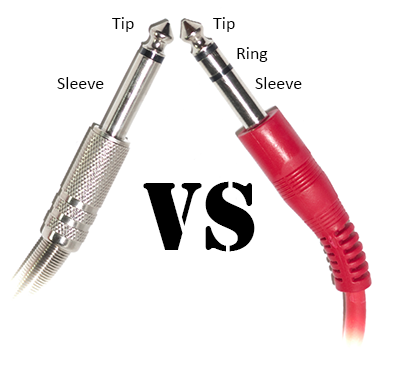
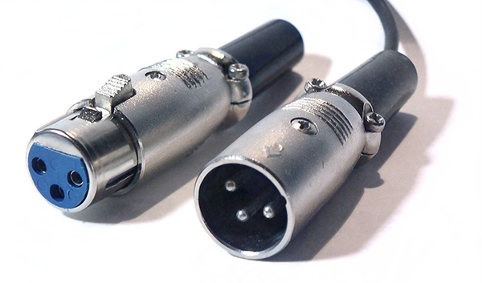
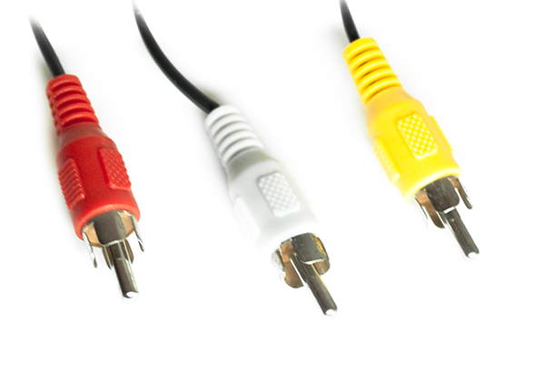
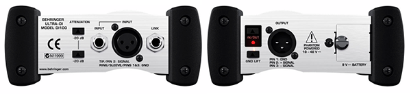

IMPMOOC
Type and usage of important studio cables
Presented by @climens
Who am I?
I'm Marc Climent, a Software Developer living in Valencia, Spain.
Interested in music and sound as a hobby, maybe just like you.
Common connectors
These are the most common connectors you can find in a music studio. We'll see them in detail.
- TS - "Tip-Sleeve"
- TRS - "Tip-Ring-Sleeve"
- XLR
- RCA
TS - "Tip sleeve"
A very basic connector. Mostly used to connect mono instruments like guitars. It's also known as audio jack.
The cables contain two connectors, one for the sound information (or live) and the other for ground.
The tip is connected to the live conductor and the sleeve is connected to the ground conductor.
As there's only one conductor for sound, it's unbalanced, so it should only be used in short distances and only if necessary because significant noise can appear.
TRS - "Tip Ring sleeve"
An enhancement of the TS connector. Mostly used to connect stereo headphones (stereo jack) as well as creating balanced mono connections.
The cables contain three connectors, two for the sound information and the other for ground.
The tip and the ring are connected to the live conductors and the sleeve is connected to the ground conductor.
If used for balanced connections, protection against noise is provided and reach distances of several meters without noise problems (seen later).
TS vs TRS
TS and TRS
As you can see, it's difficult to know if a connector hole is for TS or TRS cables
TS are usually connected to Instrument (or Instr) or HiZ labeled connections
TRS are usually connected to Phones labeled connections.
TRS is used mostly in any other type of application.
There are also small versions of these connectors or mini jacks used commonly for headphones and many other consumer products.
XLR
The name comes from a product called Cannon X (there the X). Then a latch was added (there the L). And finally the R comes from the material that surrounded the female connector. Therefore are also known as Cannon connectors.
They are commonly used for connecting microphones and have many other applications as they are balanced and keep fixed together when connected.
The cable has three conductors and works like the TRS cable, with two conductors carrying the audio signals and the other the ground signal.
Phantom power can be provided with this cable with 40V DC in both carrier conductors using the ground as reference
XLR
The XLR connector
RCA
The name comes from Radio Corporation of America.
Usually come two (red and white) or three (red, white and yellow) connectors together with a two conductor cable each.
White is for left or mono channel, Red for right stereo channel and Yellow is used for video
They are commonly used to connect end user equipment like TVs or DVDs.
As with TS, they are not balanced so noise is expected with long distances. Keep them short.
XLR
The XLR connector
Balanced connections
The two conductors that carry the sound in balanced connections are twisted ant thus they suffer the same interferences from external sources.
The trick is that the signal from one cable has the phase inverted from the other, this means that the signal is inverse (if added it should be nothing).
What happens if noise is affects equally both conductors? It doubles when added! This way, the noise can be extracted and removed from the audio signal.
Balanced connections
Awesome!

But...
Yes, guitars have TS cables and you can't change that.
The solution: a DI Box.

Behringer ULTRA-DI DI100DI Box
DI comes from Direct Inject.
They convert HiZ or High Impedance unbalanced signals to Low Impedance microphone balanced signals.
They are small and portable. Some of them are passive, others need a small battery.
It's better to have a short TS cable from the instrument, use a DI box to carry the sound anywhere.
Conclusion
Each cable has its own use. They are not perfect but it's better to know their strengths and weaknesses!
Balance your signals as soon as possible if you want them to go somewhere.
Enjoy!
That's all!